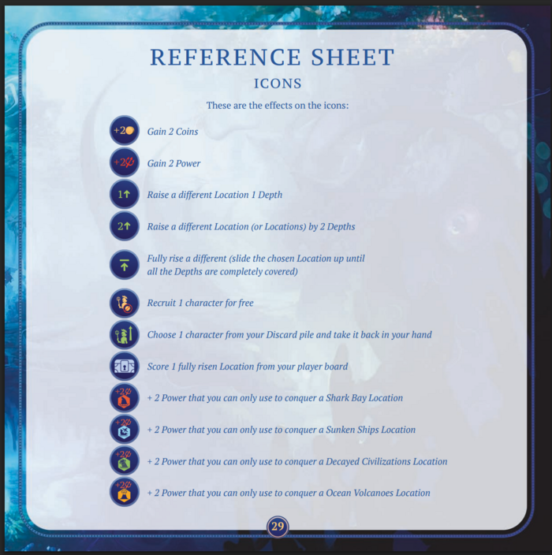

Aquatica
Board Game Arena 官方规则文档
Overview
In Aquatica, players take the role of Sea Folk seeking prosperity by conquering and harvesting treasures from undersea locations. The player with the most Prosperity Points at the end of the game wins!
Setup
There is a main board displaying the goals, locations you can Buy or Conquer, and Sea Folk you can recruit. Each player has their own board on which you will place the locations you buy (up to 5). Next to your board are your Mantas, which add certain bonuses. Once a Manta is used, it is flipped to its "tired" side. It can be "refreshed" (flipped back) and used again with a card like Matrona or Mantas Leader.
There are two ways to gain Locations--purchasing them with gold or conquering them (strength is represented with "red tridents"). Locations are in two rows. The bottom row is the main Location row where they first become available. When a player "scouts", these Locations are moved to the top row, where their "Conquer" cost is reduced by 1 (gold price remains the same). Note that the top row has less capacity than the bottom, so if there are more Locations than spaces, the player who played the scout card gets to choose which Locations to discard.

Gameplay
Each player starts with a handful of cards (recruited Sea Folk). Each card has an ability that you must execute as fully as possible.
Before your turn, you may perform optional actions before and/or after playing your Character card.
- Activate a ready Manta (flipping it to its tired side) to gain a resource or trigger a special effect.
- Exploit a Location to gain the displayed resource or effect. Once used, the Location card slides up one step.
On your turn, you must play 1 Character card from your hand.
You can only gain resources from Mantas or Locations when your played character's ability requires it. For example, if you play a card that says "Conquer a Location", you can only activate Mantas that give you red tridents.
Character Cards
Most Character cards let you do one or more of the following actions:
- Recruit: Pay coins to add a Character card from the display to your hand.
- Buy a Location: Pay coins to gain a Location card and place it on your board.
- Conquer a Location: Pay red tridents (Conquering power) to gain a Location card and place it on your board.
- Raise a Location: Slide a Location card on your board up one notch. This signifies that you have "plumbed the depths" of this Location and gained resources or benefits (or sometimes nothing).
- Score a Fully Raised Location: Add its Prosperity Points to your total and discard it.
- Scout: Refresh the Location display. The cards in the top row of Locations (if any) are discarded. Locations in the main row move from bottom to top. The bottom row refills with new cards from the deck.
Gaining and Using Locations
Your board only has space for five Locations. If you have five, one must be scored and discarded before you can add another. Locations must be raised (look for the ↑ icon on Characters and Mantas) to gain their benefits, and raised fully to be scored.
When a Location with a purple "Wild Manta" is fully raised, you get a new purple Manta in your collection. You get this before the card is scored.
Goals
Goals are shown at the top of the main board. Any player can claim one as soon as its condition is met. To claim a goal, you must use/sacrifice one of your non-purple Mantas to place on the goal tracker. Each goal can only be claimed by a player once. More than one player can claim a goal, but the earlier it is claimed, the more points that player earns.
End Game
Final round is triggered when any of the following occurs:
- One player has claimed all four goals.
- The Location deck is empty.
- The Character deck is empty.
Each player gets one final turn.
Scoring
Scores are determined by:
- Character cards in your hand (not discarded). One point for each.
- Points shown on discarded Locations (Locations that are still on your player board do not score).
- Points from goals, based on where your Manta has been placed in the Goal area.
If there is a tie, the player with the most Mantas in their personal supply wins.
Variants
King Cards
King cards provide a unique ability and count toward Character-based goals and are counted in the score at the end of the game. Each player starts with a King card in hand.
Variable Goals
Instead of four default goals, the goals are randomized. This offers alternative objectives and different scoring conditions.